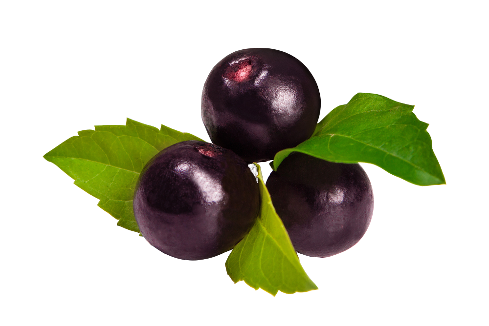

O cacaueiro é uma árvore conhecida e apreciada pelos nativos americanos, principalmente Maias e Astecas, muito antes de Cristovão Colombo chegar a América. Suas amêndoas já circularam como moeda corrente em alguns países americanos. Ainda sobre o uso do cacau como moeda, Peter Martyr da Algeria escrevia em 1530: "Abençoado dinheiro, que fornece uma doce bebida e é benéfico para a humanidade, protegendo os seus possuidores contra a infernal peste da cobiça, pois não pode ser acumulado muito tempo nem escondido nos subterrâneos". Os indígenas preparavam o chocolate a partir das amêndoas torradas, posteriormente trituradas entre duas pedras. A seguir essa massa era fervida em água aromatizada com baunilha, canela e pimenta da Jamaica (Bondar, 1938). Atualmente, o cacau é classificado comoum produto estimulante. Das amêndoas fermentadas e secas do cacaueiro extraem-se a manteiga, o pó de cacau, o líquor, a torta e o chocolate. Sua principal utilização é o fabrico do chocolate, que apresenta alto valor nutritivo e alimentício,por conter elevado teor de açúcar, manteiga e proteínas.
Açaí é o fruto do açaizeiro (Euterpe oleracea). Originária da região amazônica, além da fruta produzir um saboroso palmito, ele é muito rico em ferro energizante e, em seu estado puro, uma excelente maneira de se evitar o envelhecimento precoce. O açaizeiro é uma árvore que pode chegar a atingir até 30 metros de altura e que prefere áreas úmidas, fato que faz com que a mesma cresça nas margens dos rios. A palmeira era explorada principalmente para produção de palmito, mas o fruto passou a ser o grande negócio.Várias alternativas surgiram para o aproveitamento integral dessa palmeira nas indústrias alimentícias, de corantes naturais, cosméticos, fármacos, celulose e papel, entre outras. Com a expansão do consumo do fruto do açaí, houve redução do corte para as indústrias processadoras. A valorização do fruto trouxe benefício econômico para a população regional e ecológico promovendo a conservação de açaizais. Para ser apreciado, é necessário que o açaí seja amassado. Assim, sua polpa é retirada e misturada na água, originando o chamado “vinho do açaí”. A fruta é empregada no preparo de bebidas, doces, sorvetes e geléias. O fruto da Amazônia conquistou paladares em várias regiões do Brasil. O açaí na tigela, como é chamado, é a forma mais comum de consumo da fruta: a polpa do açaí congelada é batida com xarope de guaraná, originando uma pasta semelhante ao sorvete. O Brasil é o grande produtor mundial de açaí, responsável por 85% da oferta mundial.